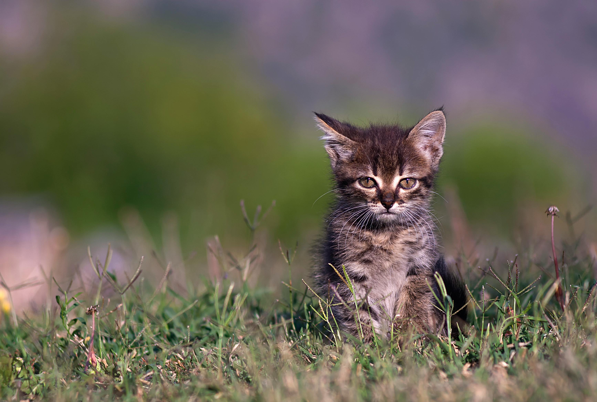

Cuidados Essenciais Para Gato: Filhotes e Adultos
Cuidar de gatos, sejam eles filhotes ou adultos, é uma responsabilidade que traz muita alegria e amor. Aqui estão algumas informações importantes para garantir que seu amigo felino tenha uma vida saudável e feliz:
-Alimentação Adequada - Ração de Qualidade: Escolha rações específicas para a idade do gato (filhote, adulto ou sênior) e que atendam às necessidades nutricionais dele. - Água Fresca: Mantenha sempre água limpa e fresca à disposição.
-Vacinas Necessárias - Vacinas Básicas: Gatos devem ser vacinados contra doenças como a panleucopenia, rinotraqueíte e calicivírus. As vacinas são geralmente aplicadas em duas doses, começando aos 2 meses de idade. - Vacina Antirrábica: É importante vacinar o gato contra a raiva assim que atingirem a idade adequada, geralmente entre 3 e 6 meses, e manter essa vacina em dia anualmente.
-Espaço Seguro - Ambiente Controlado: Gatos adoram explorar, mas é crucial garantir que o espaço seja seguro. Evite janelas abertas sem telas de proteção e mantenha objetos perigosos fora do alcance. - Área de Descanso: Forneça um local confortável e tranquilo para o gato descansar, longe de barulhos excessivos e correria.
-Interação e Carinho - Respeitar o Espaço Pessoal: Gatos são criaturas sensíveis. Evite fazer carinho quando eles estiverem dormindo ou em momentos em que parecem desconfortáveis. - Brincadeiras: Ofereça brinquedos interativos para estimular o exercício físico e mental. Brincar com seu gato ajuda a fortalecer o vínculo entre vocês.
-Higiene - Caixa de Areia Limpa: Mantenha a caixa de areia limpa, trocando a areia regularmente. Isso é fundamental para a saúde do seu gato. - Escovação: Escove o pelo do seu gato regularmente, especialmente se ele tiver pelos longos, para evitar nós e acúmulo de pelos soltos.
-Saúde Regular - Consultas Veterinárias: Leve seu gato ao veterinário pelo menos uma vez por ano para check-ups regulares e discussões sobre vacinas adicionais ou necessidades especiais. - Observação de Sintomas: Fique atento a mudanças no comportamento, apetite ou hábitos de higiene do seu gato, pois isso pode indicar problemas de saúde.
Desde 2020 tenho acompanhado algumas plataformas e bookcamp para o desenvolvimento desta linguagem e estou gostando muito de aprender e desenvolver projetos com ela. Sendo elas a https://www.freecodecamp.org/ , https://mimo.org/ , https://motiro.app/ e https://code.org/